Web Teknolojileri · Dönem Ödevi Raporu
| Öğrenci | Yahya Demir |
| Öğrenci no | 231229032 |
| Depo | github.com/demir212/yemekhane-otomasyonu |
| Mimari | Web API (Node.js 22 + Express) · HTML/CSS/JS arayüz · Apache |
| Veri | MySQL 8.4 kaynak + replika (GTID) · Redis 7.4 |
| Etiketler | asama-1 asama-2 asama-3 asama-4 |
Sistem altı container'dan oluşur ve depo kökünde tek komutla ayağa kalkar. Tarayıcı veritabanına doğrudan bağlanmaz; tüm istekler Apache üzerinden uygulamaya, uygulama da veri katmanı üzerinden MySQL ve Redis'e gider.
$ docker compose up -d $ docker compose ps # tümü healthy, replica-setup Exited (0) Tarayıcı: http://localhost:8080 · Test hesapları (şifre: Yemek2026!): leyla.arslan@kampus.edu.tr (yönetici) · murat.kaya@kampus.edu.tr (personel) mehmet.yildiz@ogr.kampus.edu.tr (öğrenci) · ayse.demir@ogr.kampus.edu.tr (öğrenci, bakiye yetersiz)
| Servis | İmaj | Görev | Port |
|---|---|---|---|
| frontend | httpd 2.4 | HTML/CSS/JS'i sunar, /api/ isteklerini uygulamaya aktarır (WEBAPI modu) | 8080 |
| uygulama | node:22-alpine | Express Web API; yalnızca JSON döner | 8000 (iç) |
| mysql-primary | mysql:8.4 | Kaynak (yazma) veritabanı; db/init/*.sql ilk açılışta çalışır | 3307 |
| mysql-replica | mysql:8.4 | Replika (okuma), super_read_only | 3308 |
| replica-setup | mysql:8.4 | Replikayı bir kez kurar (dump + GTID otomatik konum) ve çıkar | – |
| redis | redis:7.4-alpine | Menü önbelleği ve oturum deposu (AOF açık) | 6379 |
Her aşamanın kanıtı tekrar üretilebilir bir betikle alınmıştır. Betikler komutları ve çıktılarını rapor/ klasörüne yazar;
bu rapordaki çıktılar o dosyalardan alınmış kısaltılmış kesitlerdir.
| Betik | Çıktı dosyası |
|---|---|
bash rapor/asama1-dogrulama.sh | rapor/asama1-cikti.txt |
bash rapor/asama3-dogrulama.sh | rapor/asama3-cikti.txt |
bash rapor/asama4-dogrulama.sh | rapor/asama4-cikti.txt |
Compose dosyasında uygulama servisi açıldı ve sağlık kontrolü eklendi. Replikasyon GTID ile kurulur; replika salt okunurdur.
$ docker compose exec mysql-replica mysql -uroot -p*** -e "SHOW REPLICA STATUS\G" | grep ... Source_Host: mysql-primary Replica_IO_Running: Yes Replica_SQL_Running: Yes Seconds_Behind_Source: 0 Auto_Position: 1 $ ... mysql-replica ... -e "SELECT @@read_only, @@super_read_only" @@read_only @@super_read_only 1 1
$ ... mysql-replica ... -e "SELECT id, ad, bakiye FROM kullanicilar WHERE id = 7" 7 Mehmet 655.00 $ ... mysql-primary ... -e "CALL sp_bakiye_yukle(7, 100)" hareket_id bakiye 457 755.00 $ ... mysql-replica ... -e "SELECT id, ad, bakiye FROM kullanicilar WHERE id = 7" 7 Mehmet 755.00
$ ... mysql-replica ... -e "CALL sp_bakiye_yukle(7, 50)" ERROR 1290 (HY000): The MySQL server is running with the --super-read-only option so it cannot execute this statement $ ... mysql-replica ... -e "UPDATE kullanicilar SET bakiye = 0 WHERE id = 7" ERROR 1290 (HY000): The MySQL server is running with the --read-only option so it cannot execute this statement
$ docker compose stop mysql-replica $ ... mysql-primary ... -e "CALL sp_bakiye_yukle(7, 200)" → bakiye 955.00 $ docker compose start mysql-replica $ ... mysql-replica ... -e "SELECT id, bakiye FROM kullanicilar WHERE id = 7" 7 955.00 Replica_IO_Running: Yes · Replica_SQL_Running: Yes · Seconds_Behind_Source: 0
$ ... -e "SELECT k.id, k.bakiye, SUM(h.tutar) FROM kullanicilar k JOIN bakiye_hareketleri h ... WHERE k.id = 7" kaynak: 7 955.00 955.00 replika: 7 955.00 955.00 $ docker compose exec -T redis redis-cli ping PONG $ curl -s -o /dev/null -w "HTTP %{http_code}" http://localhost:8080/ HTTP 200
Ayrıca depo GitHub'dan boş bir klasöre klonlanıp boş veritabanıyla docker compose up -d ile kurulmuş, tüm servisler
yaklaşık 35 saniyede sağlıklı duruma gelmiştir.
Uygulama Web API olarak yazıldı: arayüz statik HTML/CSS/JS'tir ve yalnızca /api/ adreslerine fetch ile istek atar.
Kod dört katmana ayrılmıştır; controller'larda SQL yoktur, arayüzde iş kuralı yoktur.
| Katman | Klasör | Sorumluluk |
|---|---|---|
| Rota + ara katman | rotalar.js, ara/ | Adres → controller eşlemesi; oturum ve rol kontrolü; hataların JSON'a çevrilmesi |
| Controller | kontrolculer/ | HTTP'den veriyi alır, servisi çağırır, durum kodu ve JSON döner (her fonksiyon 1–3 satır) |
| İş (servis) | servisler/ | Doğrulama ve iş kuralları (fiyat seçimi, iptal kuralı, puan aralığı), hangi veritabanından okunacağı, önbellek |
| Veri | veri/ | Tüm SQL ve stored procedure çağrıları; yazma (kaynak) ve okuma (replika) havuzları; Redis bağlantısı |
Örnek: öğrencinin rezervasyon yapması (POST /api/rezervasyonlar, gövde {"menu_id": 56, "porsiyon": "tam"}).
Y.rezervasyonYap() → fetchProxyPass /api/ → uygulama:8000oturumGerekli (Redis'ten oturum).olusturCALL sp_rezervasyon_yap(?,?,?) (kaynak)r.post('/rezervasyonlar', sar(rezervasyon.olustur)). Önce oturumGerekli ara katmanı çerezdeki belirteçle oturumu bulur ve req.oturum'a koyar; yoksa 401 döner.res.status(201).json(await rezervasyonServisi.rezervasyonYap(req.oturum, req.body)) — SQL ya da kural içermez.menu_id pozitif tam sayı mı, porsiyon tam/yarım mı kontrol eder; veri katmanını çağırır; ardından
kullanıcıya "yazdı" işareti koyar (bkz. okuma/yazma ayrımı).yordamCagir() yordamı yazma havuzunda (mysql-primary) çalıştırır. Kapasite, son saat, bakiye ve
mükerrer rezervasyon kontrolleri yordamın içinde, satırlar kilitlenerek yapılır.{rezervasyon_id, ucret, bakiye, porsiyon} JSON olarak döner; arayüz üstteki bakiyeyi
bu değerle günceller.Hata yolu: yordam SIGNAL SQLSTATE '45000' ile hata verirse (ör. "Bakiye yetersiz.") mysql2 bunu errno 1644 olarak
fırlatır. sar() hatayı hataYakalayici'ya iletir; o da 400 ve {"hata": "Bakiye yetersiz."} döner. Arayüzdeki
Y.istek() bu mesajla bir Error fırlatır ve sayfa mesajı değiştirmeden gösterir. Beklenmeyen hatalar günlüğe yazılır,
kullanıcıya genel bir mesaj gider (iç ayrıntı sızmaz).
Okuma örneği: GET /api/menu → menuKontrolcu.gununMenusu → menuServisi.gununMenusu: menü içeriği önce
Redis'ten, yoksa menuVeri.menuDetay(okuma, …) ile replikadaki v_menu_detay görünümünden okunur; doluluk
v_menu_doluluk'tan gelir; fiyat kullanıcının rolüne göre servis katmanında seçilir.
| İşlem | Nereye gider |
|---|---|
| Rezervasyon, iptal, bakiye yükleme | Kaynak · sp_rezervasyon_yap, sp_rezervasyon_iptal, sp_bakiye_yukle |
| Değerlendirme kaydı, yönetici menü oluşturma/düzenleme, alerjen seçimi | Kaynak · transaction içinde INSERT/UPDATE |
| Menü, haftalık görünüm, rezervasyon listesi, hareket geçmişi, yönetici raporu | Replika (okuma havuzu) |
| Rezervasyondan hemen sonra gösterilen bakiye | Kaynak · yordamın döndürdüğü değer |
| Yazma yapan kullanıcının sonraki 10 saniyedeki okumaları | Kaynak (aşağıdaki paragraf) |
Replika gecikmesi. MySQL replikasyonu eşzamansızdır: kaynak bir işlemi onayladıktan sonra değişiklik binlog üzerinden replikaya
gönderilir ve orada ayrıca uygulanır. Bu yüzden replika kısa bir süre (normalde milisaniyeler, yük altında ya da ağ sorununda saniyeler)
geride kalabilir. Listeler replikadan okunduğu için, rezervasyon yapan bir öğrenci hemen ardından replikadan okunan eski bakiyeyi ya da
rezervasyonunun listede olmadığını görebilir. Bunu önlemek için iki önlem alınmıştır: (1) Rezervasyon ve bakiye yükleme yanıtındaki bakiye
doğrudan yordamdan, yani kaynaktan gelir ve arayüz bunu gösterir. (2) "Kendi yazdığını oku" kuralı: bir kullanıcı yazma yaptığında Redis'e
yazdi:{kullanici_id} anahtarı 10 saniyelik süreyle yazılır; bu anahtar varken o kullanıcının okumaları kaynaktan yapılır, sonra
yeniden replikaya döner. Başka kullanıcılar doluluk gibi bilgileri bir an gecikmeli görebilir; bu kabul edilebilir, çünkü kapasite ve
bakiye kontrolü her zaman kaynakta, kilitli satırlar üzerinde yordam içinde yapılır — gecikme fazla rezervasyona ya da eksi bakiyeye yol açamaz.
Kural, replikanın SQL iş parçacığı durdurularak yapay bir gecikmeyle denenmiştir:
$ ... mysql-replica ... -e "STOP REPLICA SQL_THREAD" # replika geride kalır önce API: "bakiye":705 $ curl ... -d '{"tutar":100}' /api/bakiye/yukle {"hareket_id":461,"bakiye":805} hemen API (10 sn kaynaktan okur): "bakiye":805 kaynak DB: 805.00 replika DB: 705.00 11 sn sonra API (replikadan): "bakiye":705 # listeler gerçekten replikadan okunuyor $ ... mysql-replica ... -e "START REPLICA SQL_THREAD" replika yeniden başlatıldı, API: "bakiye":805
$2a$10$…); giriş bcrypt.compare ile doğrulanır.HttpOnly; SameSite=Strict. Yönetim adresleri rolGerekli('yonetici') ile korunur (öğrenci → 403).Y.esc() ile kaçırılır (XSS).Apache üzerinden 63 kontrolden oluşan bir API testi çalıştırıldı (giriş/çıkış, menü kuralları, rol fiyatı, rezervasyon ve iptal kuralları, bakiye sınırları, değerlendirme kuralları, yönetici yetkisi ve menü doğrulamaları, hata durumları). Sonuç: 63 geçti, 0 kaldı — Aşama 3 ve Aşama 4 kodu üzerinde de yeniden çalıştırılıp aynı sonuç alındı.
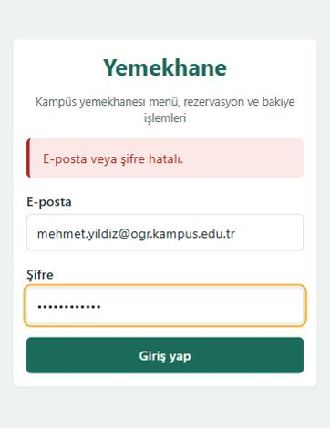
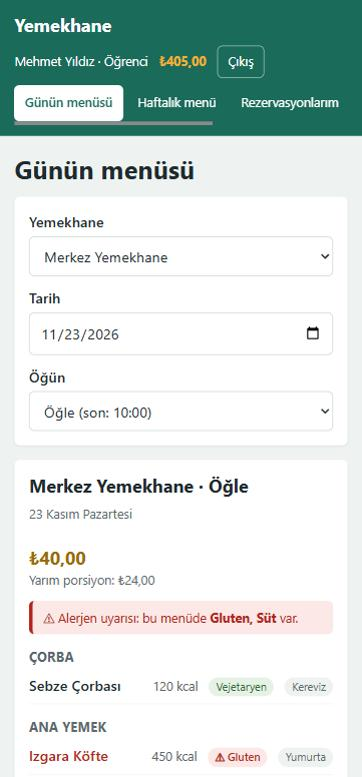
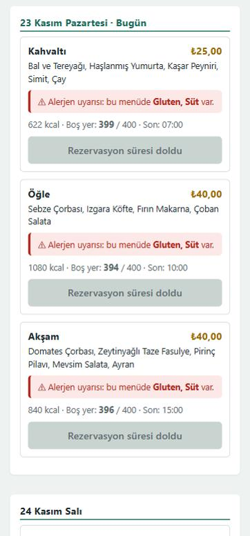
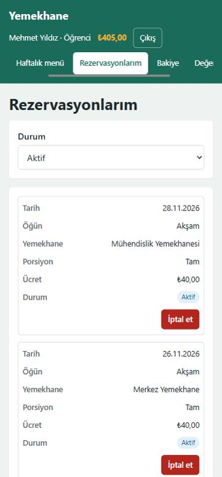
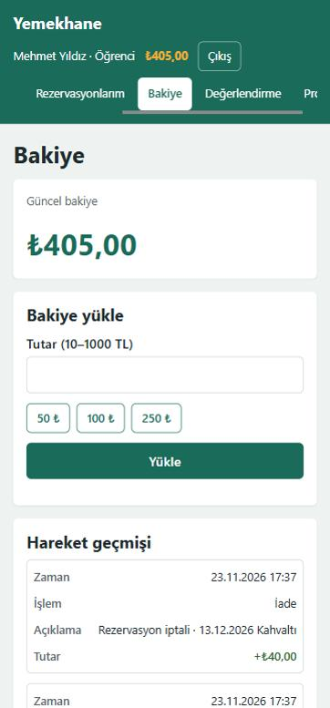
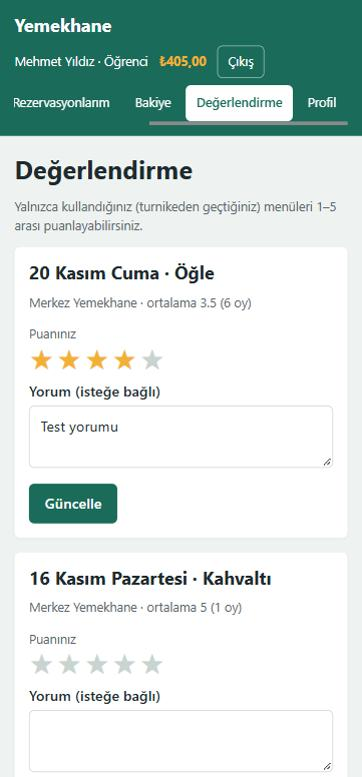
Tablolar 600 px'in altında karta dönüşür; üst menü yana kaydırılabilir ve aktif sekme görünür alana getirilir. Hiçbir ekranda yatay taşma yoktur.
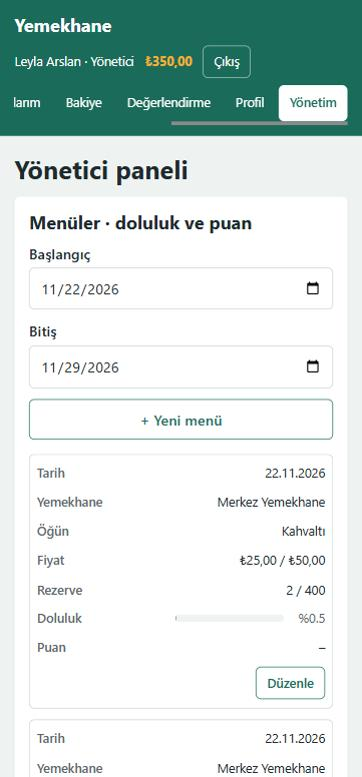
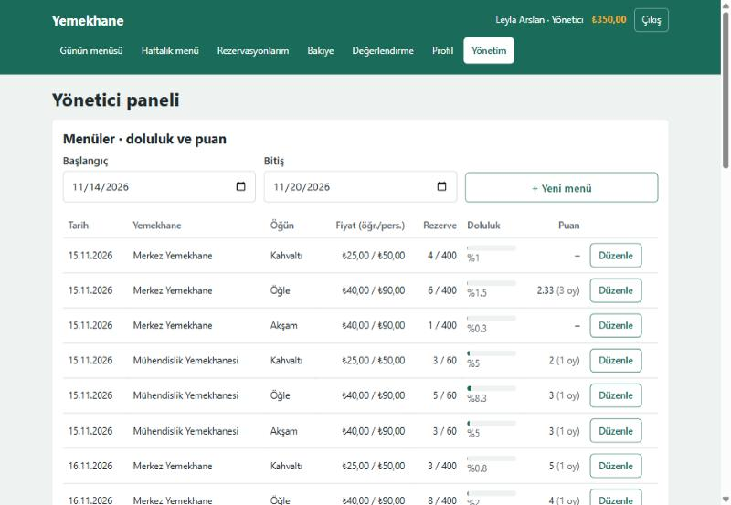
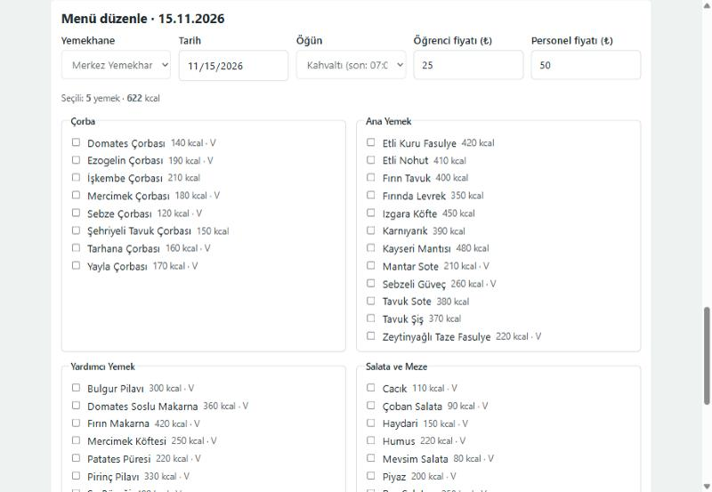
Yönetici menü oluşturur ve düzenler; aynı yemekhane/tarih/öğün için ikinci menü, negatif fiyat ve yemeksiz menü engellenir.
Rapor, menü başına rezerve/kapasite, doluluk yüzdesi ve v_menu_puan'dan ortalama puanı gösterir.
| Görev | Anahtar | Süre | Ne zaman silinir |
|---|---|---|---|
| Menü önbelleği | menu:{yemekhane_id}:{tarih}:{ogun_id} | Menü gününün sonuna kadar (SET … EXAT) | Yönetici menüyü oluşturduğunda/değiştirdiğinde |
| Oturum | oturum:{token} | 30 dk; her istekte yenilenir (GETEX … EX 1800) | Çıkış yapıldığında |
| Kendi yazdığını oku | yazdi:{kullanici_id} | 10 sn | Süre dolunca |
Önbellekte yalnızca değişmeyen menü içeriği (yemekler, kalori, alerjen, fiyatlar) tutulur; doluluk ve kullanıcının rezervasyonu her istekte veritabanından okunur. Yönetici menüyü değiştirince eski anahtar silinir ve yeni içerik kaynaktan okunup yazılır: replikadan okunsaydı, replika henüz güncellenmemişse eski menü yeniden önbelleğe girip gün sonuna kadar kalabilirdi.
$ docker compose exec -T redis redis-cli GET oturum:f643c1e3… {"kullanici_id":7,"rol":"ogrenci","ad":"Mehmet","soyad":"Yıldız"} $ docker compose exec -T redis redis-cli TTL oturum:f643c1e3… 1799 # 6 saniye sonra 1792 $ curl -s -H 'Cookie: oturum=f643c1e3…' http://localhost:8080/api/ben → HTTP 200 $ docker compose exec -T redis redis-cli TTL oturum:f643c1e3… 1800
$ docker compose exec -T redis redis-cli DEL menu:1:2026-11-23:2 $ curl ... "/api/menu?yemekhane_id=1&tarih=2026-11-23&ogun_id=2" # 1. istek $ curl ... "/api/menu?yemekhane_id=1&tarih=2026-11-23&ogun_id=2" # 2. istek $ docker compose logs uygulama | grep '\[önbellek\]' [önbellek] ISKA menu:1:2026-11-23:2 → veritabanından okundu, önbelleğe yazıldı [önbellek] ISABET menu:1:2026-11-23:2 → Redis'ten okundu $ docker compose exec -T redis redis-cli TTL menu:1:2026-11-23:2 117666 $ docker compose exec -T redis redis-cli EXPIRETIME menu:1:2026-11-23:2 1795467599 # = 2026-11-23 23:59:59 +0300, menü gününün sonu $ docker compose exec -T redis redis-cli GET menu:1:2026-11-23:2 | cut -c1-160 {"menu_id":50,"tarih":"2026-11-23","yemekhane_id":1,"yemekhane":"Merkez Yemekhane","ogun_id":2,"ogun":"Öğle", ...
$ docker compose exec -T redis redis-cli GET menu:1:2026-11-23:2 | grep -o '"ogrenci_fiyati":[0-9.]*' "ogrenci_fiyati":40 $ curl -X PUT -H 'Cookie: oturum=(yönetici)' -d '{"ogrenci_fiyati":45,"personel_fiyati":90,"yemek_idler":[6,11,25,29]}' \ http://localhost:8080/api/yonetim/menuler/50 {"menu_id":50} $ docker compose logs uygulama | grep '\[önbellek\]' [önbellek] SİLİNDİ menu:1:2026-11-23:2 (yönetici menüyü değiştirdi; eski kayıt vardı) [önbellek] YENİLENDİ menu:1:2026-11-23:2 → kaynaktan okundu, önbelleğe yazıldı $ docker compose exec -T redis redis-cli GET menu:1:2026-11-23:2 | grep -o '"ogrenci_fiyati":[0-9.]*' "ogrenci_fiyati":45 $ curl -s -H 'Cookie: oturum=(öğrenci)' '/api/menu?...' | grep -o '"fiyat":[0-9.]*' "fiyat":45
Arayüzde de denenmiştir: öğrencinin açık menü sayfası yenilendiğinde fiyat hemen yeni değere (40 → 48 TL) geçmiştir.
$ docker compose restart uygulama $ docker compose ps uygulama → uygulama Up 12 seconds (healthy) $ curl -s -H 'Cookie: oturum=f643c1e3…' http://localhost:8080/api/ben # yeniden giriş yapmadan {"id":7,"ad":"Mehmet","soyad":"Yıldız","eposta":"mehmet.yildiz@ogr.kampus.edu.tr","rol":"ogrenci",...} $ docker compose exec -T redis redis-cli EXISTS oturum:f643c1e3… 1 $ curl -s -X POST -H 'Cookie: oturum=f643c1e3…' http://localhost:8080/api/oturum/cikis {"tamam":true} $ docker compose exec -T redis redis-cli EXISTS oturum:f643c1e3… 0 $ curl -s -H 'Cookie: oturum=f643c1e3…' http://localhost:8080/api/ben {"hata":"Oturumunuz sona erdi. Lütfen yeniden giriş yapın."}
Ek denemeler: süresi dolan oturum 401 alır; geçmiş günün menüsü önbelleğe yazılmaz; Redis yeniden başlatılsa da (AOF) oturumlar korunur ve uygulama Redis'e kendiliğinden yeniden bağlanır.
Değişiklik tek bir migration dosyasıyla yapıldı: db/init/04_degisiklik.sql. Çalışan sistemde yalnızca kaynağa bir kez uygulanır;
DDL ve yordam değişikliği GTID replikasyonuyla replikaya kendiliğinden geçer. Sıfırdan kurulumda 01 ve 02'den sonra otomatik çalışır.
| Değişiklik | Ayrıntı |
|---|---|
ogunler.yarim_porsiyon_orani | DECIMAL(3,2), NULL = yarım porsiyon yok. Öğle ve akşam 0.60, kahvaltı NULL. CHECK kısıtı: 0 < oran < 1 |
rezervasyonlar.porsiyon | ENUM('tam','yarim') NOT NULL DEFAULT 'tam' → mevcut tüm rezervasyonlar tam porsiyon sayılır |
kullanici_alerjenleri | Yeni tablo (kullanici_id, alerjen_id), iki yabancı anahtar |
sp_rezervasyon_yap | Üçüncü parametre p_porsiyon. Yarım porsiyonda ücret ROUND(fiyat × oran, 2); oran yoksa
"Bu öğünde yarım porsiyon seçilemez."; geçersiz değerde "Geçersiz porsiyon seçimi."; hareket açıklaması "Rezervasyon (yarım porsiyon)".
İptal yordamı değişmedi: iade, rezervasyonda saklanan gerçek ücrettir. |
Aşağıdaki çıktılar, GitHub'daki asama-3 sürümünden kurulan temiz bir ortamda (migration öncesi hâli) asama4-dogrulama.sh
çalıştırılarak alınmıştır.
# önce (kaynak): rezervasyon ucret_toplami bakiye_toplami hareket
367 16250.00 9737.50 454
$ docker compose exec -T mysql-primary mysql -uroot -p*** yemekhane < db/init/04_degisiklik.sql
# çıkış kodu: 0
# sonra (kaynak): 367 16250.00 9737.50 454 Önce/sonra özetleri aynı ✓
$ ... mysql-replica ... -e "SELECT porsiyon, COUNT(*) FROM rezervasyonlar GROUP BY porsiyon"
tam 367
$ ... mysql-replica ... -e "SELECT id, ad, yarim_porsiyon_orani FROM ogunler"
1 Kahvaltı NULL
2 Öğle 0.60
3 Akşam 0.60
$ docker compose exec -T mysql-replica mysql -uroot -p*** yemekhane -e "SHOW CREATE TABLE rezervasyonlar\G" Create Table: CREATE TABLE `rezervasyonlar` ( `id` int unsigned NOT NULL AUTO_INCREMENT, `kullanici_id` int unsigned NOT NULL, `menu_id` int unsigned NOT NULL, `durum` enum('aktif','kullanildi','iptal') ... NOT NULL DEFAULT 'aktif', `porsiyon` enum('tam','yarim') COLLATE utf8mb4_tr_0900_ai_ci NOT NULL DEFAULT 'tam', `ucret` decimal(8,2) NOT NULL, ... $ ... mysql-replica ... -e "SHOW CREATE TABLE ogunler\G" `yarim_porsiyon_orani` decimal(3,2) DEFAULT NULL COMMENT 'NULL ise yarım porsiyon yok; aksi halde tam fiyatla çarpılır', CONSTRAINT `ck_ogun_yarim_oran` CHECK (((`yarim_porsiyon_orani` is null) or ((`yarim_porsiyon_orani` > 0) and (`yarim_porsiyon_orani` < 1)))) $ ... mysql-replica ... -e "SHOW CREATE TABLE kullanici_alerjenleri\G" Create Table: CREATE TABLE `kullanici_alerjenleri` ( `kullanici_id` int unsigned NOT NULL, `alerjen_id` tinyint unsigned NOT NULL, PRIMARY KEY (`kullanici_id`,`alerjen_id`), KEY `fk_ka_alerjen` (`alerjen_id`), CONSTRAINT `fk_ka_alerjen` FOREIGN KEY (`alerjen_id`) REFERENCES `alerjenler` (`id`), CONSTRAINT `fk_ka_kullanici` FOREIGN KEY (`kullanici_id`) REFERENCES `kullanicilar` (`id`) ON DELETE CASCADE ) ENGINE=InnoDB DEFAULT CHARSET=utf8mb4 COLLATE=utf8mb4_tr_0900_ai_ci $ ... mysql-replica ... -e "SELECT ORDINAL_POSITION, PARAMETER_NAME, DATA_TYPE FROM information_schema.PARAMETERS WHERE SPECIFIC_NAME='sp_rezervasyon_yap' ..." 1 p_kullanici_id int 2 p_menu_id int 3 p_porsiyon varchar Replica_IO_Running: Yes · Replica_SQL_Running: Yes · Seconds_Behind_Source: 0 · Last_SQL_Error: (boş)
Menü önbelleği değerine biçim sürümü eklendi ("surum":2; yeni alan yarim_porsiyon_orani). Yeni uygulama açılışta
menu:* anahtarlarını SCAN ile tarar (Redis'i kilitlemez) ve güncel sürümde olmayanları siler; okumada eski biçim
görülürse yok sayılır ve yenisiyle değiştirilir.
$ docker compose exec -T redis redis-cli --scan --pattern 'menu:*' | wc -l # önce 18 $ docker compose exec -T redis redis-cli GET menu:1:2026-11-24:2 | cut -c1-60 {"menu_id":50,"tarih":"2026-11-24","yemekhane_id":1, ... # sürüm alanı yok $ docker compose up -d --build uygulama $ docker compose logs uygulama | grep 'açılış temizliği' [önbellek] açılış temizliği: 18 menü kaydı tarandı, 18 eski biçimli kayıt silindi (güncel sürüm 2) $ docker compose exec -T redis redis-cli --scan --pattern 'menu:*' | wc -l 0 $ docker compose exec -T redis redis-cli GET menu:1:2026-11-24:2 | cut -c1-60 # ilk istekten sonra {"surum":2,"menu_id":50,"tarih":"2026-11-24", ... "yarim_porsiyon_orani":0.6 ...
# Öğle menüsü 86 · öğrenci fiyatı 40 TL, yarım porsiyon 24 TL (oran 0.6) · Kahvaltı menüsü 85 · yarim_fiyat: null $ curl -X POST -d '{"menu_id":85,"porsiyon":"yarim"}' /api/rezervasyonlar # kahvaltı {"hata":"Bu öğünde yarım porsiyon seçilemez."} $ curl -X POST -d '{"menu_id":86,"porsiyon":"cift"}' /api/rezervasyonlar {"hata":"Geçersiz porsiyon seçimi."} $ curl -X POST -d '{"menu_id":86,"porsiyon":"yarim"}' /api/rezervasyonlar # öğle {"rezervasyon_id":368,"ucret":24,"bakiye":331,"porsiyon":"yarim"} $ curl -X POST -d '{"menu_id":85}' /api/rezervasyonlar # porsiyon yok → tam {"rezervasyon_id":369,"ucret":40,"bakiye":291,"porsiyon":"tam"} $ ... mysql-primary ... -e "SELECT r.id, r.porsiyon, r.ucret, h.tutar, h.aciklama FROM rezervasyonlar r JOIN bakiye_hareketleri h ..." 369 tam 40.00 -40.00 Rezervasyon 368 yarim 24.00 -24.00 Rezervasyon (yarım porsiyon) $ curl -X DELETE /api/rezervasyonlar/368 {"rezervasyon_id":368,"iade":24,"bakiye":315} # iade = ödenen gerçek ücret
Personel için de denenmiştir: 90 TL'lik akşam menüsünde yarım porsiyon 54 TL'dir.
$ curl '/api/menu?yemekhane_id=2&tarih=2026-12-13&ogun_id=2' | grep -o '"alerjen_uyarisi":...' "alerjen_uyarisi":[] # profilde seçim yok $ curl -X PUT -d '{"alerjen_idler":[1]}' /api/profil/alerjenler # Gluten $ ... mysql-primary ... -e "SELECT ka.kullanici_id, a.ad FROM kullanici_alerjenleri ka JOIN alerjenler a ..." 7 Gluten $ curl '/api/menu?yemekhane_id=2&tarih=2026-12-13&ogun_id=2' | grep -o ... "alerjen_uyarisi":["Gluten"] "ad":"Domates Çorbası", ... "alerjenler":["Gluten","Süt"], ... "uyari_alerjenler":["Gluten"] "ad":"Ezogelin Çorbası", ... "alerjenler":["Gluten"], ... "uyari_alerjenler":["Gluten"] $ curl -X PUT -d '{"alerjen_idler":[250]}' /api/profil/alerjenler {"hata":"Geçersiz alerjen seçimi."} # Başka bir kullanıcının (Ayşe) aynı menüsünde: "alerjen_uyarisi":[] → uyarı kişiye özeldir
Uyarı önbellekteki menüye kullanıcıya göre servis katmanında eklenir; önbellek kullanıcıdan bağımsız kalır.
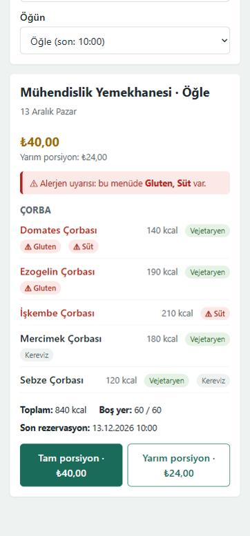
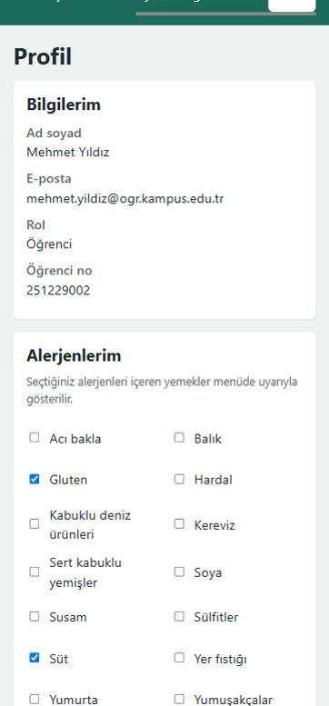
| Etiket | Commit | İçerik |
|---|---|---|
asama-1 | 9bb2592 | Başlangıç paketi ve Aşama 1 doğrulama betiği |
asama-2 | 97bce77 | Katmanlı Web API, 7 ekran, okuma/yazma ayrımı |
asama-3 | eb84fe9 | Redis menü önbelleği ve oturum deposu |
asama-4 | efcc2ae | Migration, yarım porsiyon, alerjen uyarısı, Redis temizliği |
efcc2ae 2026-11-23 Aşama 4: doğrulama betiği ve çıktısı (replikada SHOW CREATE TABLE)
59b180a 2026-11-23 Aşama 4: arayüz — porsiyon seçimi, profil/alerjen sayfası, menüde uyarı
d9c2796 2026-11-23 Aşama 4: Redis'te eski biçimli menü kayıtlarının temizlenmesi
6ae3ec8 2026-11-23 Aşama 4: API'de yarım porsiyon ve alerjen uyarısı
2093867 2026-11-23 Aşama 4: 04_degisiklik.sql migration
eb84fe9 2026-11-22 Aşama 3: Redis doğrulama betiği ve çıktısı
a1466aa 2026-11-22 Aşama 3: menü önbelleği (menu:{yemekhane_id}:{tarih}:{ogun_id})
f0fbbc3 2026-11-22 Aşama 3: oturumlar Redis'te (oturum:{token}, 30 dk kayan süre, çıkışta silinir)
adf3bb4 2026-11-22 Aşama 3: Redis bağlantısı (redis paketi, uygulama Redis'e bağlanınca dinlemeye başlar)
97bce77 2026-11-21 Apache: HTML/JS/CSS için Cache-Control: no-cache
84aa73c 2026-11-21 Aşama 2: telefon görünümü düzeltmeleri
1a3065f 2026-11-21 Aşama 1: doğrulama çıktısı eklendi, betikte parola maskesi düzeltildi
a37029c 2026-11-21 Aşama 2: menü, haftalık, rezervasyonlarım, bakiye, değerlendirme ve yönetim ekranları
93f50da 2026-11-21 Aşama 2: arayüz ortak kodu ve giriş ekranı
47aebd1 2026-11-21 Aşama 2: controller'lar, rotalar, oturum ve hata ara katmanları
6e3526d 2026-11-21 Aşama 2: iş katmanı (oturum, menü, rezervasyon, bakiye, değerlendirme, yönetim)
3c96e63 2026-11-21 Aşama 2: veri katmanı (yazma/okuma havuzları, SQL ve stored procedure çağrıları)
1a0718b 2026-11-21 Aşama 2: uygulama servisi iskeleti (Node.js/Express, Dockerfile, compose)
9bb2592 2026-11-21 Başlangıç paketi eklendi
uygulama/src/ sunucu.js giriş noktası (Redis hazır olunca dinler, açılışta önbellek temizliği) rotalar.js tüm /api/ yolları ara/ oturumKontrol.js (oturum, rol) · hataYakalayici.js kontrolculer/ oturum · menu · rezervasyon · bakiye · degerlendirme · yonetim · profil servisler/ iş kuralları · tutarlilik.js (okuma havuzu seçimi) · oturumDeposu.js · menuOnbellegi.js veri/ baglanti.js (yazma/okuma havuzları) · redisBaglanti.js · *Veri.js (SQL) frontend/ 7 ekran + profil.html · css/uygulama.css · js/ortak.js ve sayfa betikleri db/init/ 01_sema.sql · 02_ornek_veri.sql · 04_degisiklik.sql rapor/ doğrulama betikleri, çıktıları, ekran görüntüleri ve bu rapor